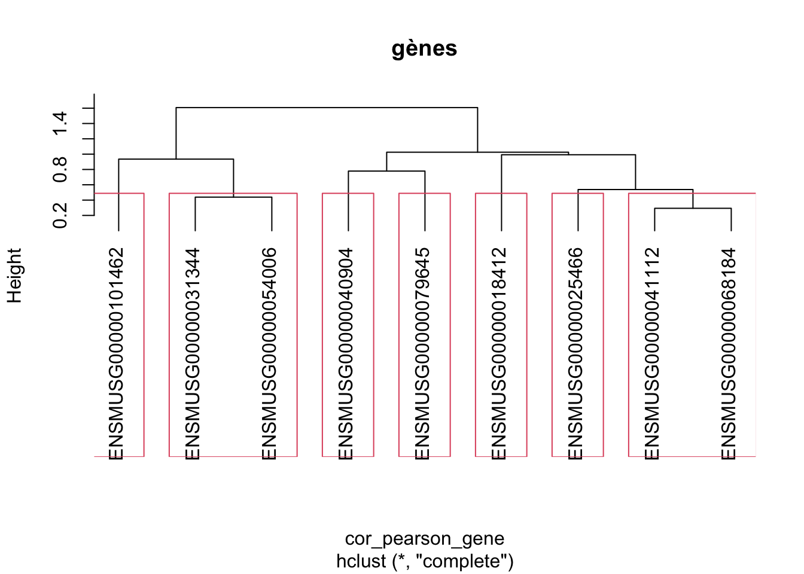
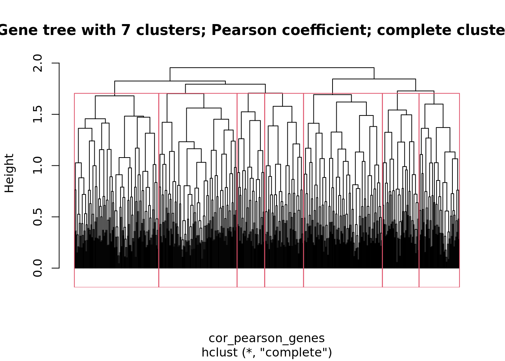
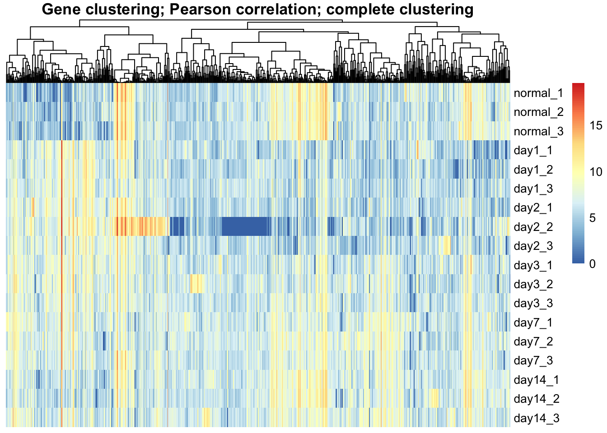

Loaded required libraries
| knitr |
| FactoMineR |
| factoextra |
| gprofiler2 |
| pheatmap |
| biomaRt |
Synopsis du projet
Travail demandé
Le but de ce travail est de mettre en oeuvre les méthodes vues dans le module 3 “R et statistiques” pour explorer le jeu de données de Pavkovic, et de rendre un rapport d’analyse au format .Rmd.
Nous fournissons ci-dessous une trame avec les principales sections attendues. Certaines contiennent déjà du code. Vous devrez en compléter d’autres. Sentez-vous libres d’adapter cette trame ou d’y ajouter des analyses complémentaires si elles vous aident à interpréter vos résultats.
Remise du rapport
Date: le 22 mai 2021 à minuit. Si vous anticipez un problème pour remettre le rapport à cette date contactez-nous aussi rapidement que possible pour que nous puissions prévoir une remise plus tardive.
- Commencez par renommer le fichier .Rmd en remplaçant Prenom-NOM par vos nom et prénom.
- Le rapport est attendu en formats .Rmd + .HTML (en gardant l’option self_contained de l’en-tête activée).
Déposez les fichiers dans un sous-dossier de vote compte du cluster. Attention, veillez à respecter précisément cette structure de chemin car nous nous baserons dessus pour récupérer vos résultats.
/shared/projects/dubii2021/[login]/m3-stat-R/mini-projet
Critères d’évaluation
- Reproductibilité des analyses: nous tenterons de regénérer le rapport HTML à partir de votre Rmd, en partant de notre compte sur le serveur IFB.
- Manipulation des objets R
- Mobilisation des méthodes statistiques vues au cours
- Pertinence des interprétations statistiques
- Pertinence des interprétations biologiques
- Clarté de la rédaction
- Clarté des illustrations (figures et tableaux): graphismes, légendes …
Nous vous encourageons à assurer la lisibilité de votre code (syntaxe, nommage des variables, commentaires de code)
Objectifs scientifiques
Nous partons du même jeu de données Fil Rouge de ce module issues de la publication Pavkovic, M., Pantano, L., Gerlach, C.V. et al. Multi omics analysis of fibrotic kidneys in two mouse models. Sci Data 6, 92 (2019). https://doi.org/10.1038/s41597-019-0095-5
Rappel sur les échantillons:
Deux modèles de fibrose rénale chez la souris sont étudiés:
Le premier est un modèle de néphropathie réversible induite par l’acide folique (folic acid (FA)). Les souris ont été sacrifiées avant le traitement (normal), puis à jour 1, 2, 7 et 14 (day1,…) après une seule injection d’acide folique.
Le second est un modèle irréversible induit chrirurgicalement (unilateral ureteral obstruction (UUO)). les souris ont été sacrifiées avant obstruction (day 0) et à 3, 7 et 14 jours après obstruction par ligation de l’uretère du rein gauche.
A partir de ces extraits de rein, l’ARN messager total et les petits ARNs ont été séquencés et les protéines caratérisées par spectrométrie de masse en tandem (TMT).
But scientifique: Dans le tutoriel sur les dataframes, vous avez travaillé sur les données de transcriptome du modèle UUO. Dans ce mini-projet, vous allez travailler sur les données du transcriptome du modèle FA afin de regrouper les observations (échantillon) et les gènes selon des profils d’expression similaires.
Votre projet se décompose en 5 parties dont 3 seront à réaliser par:
- Statitiques descriptives des données brutes: commandes fournies
- Normalisation des données : commandes fournies
- Statistiques descriptives des données normalisées: à vous de jouer
- Analyse de regroupement des données: à vous de jouer
- Analyse d’enrichissement fonctionnel: à vous de jouer
1. Les données brutes
Vous n’avez rien à coder ici. Le code est fourni.
Chargement des données brutes
Le bloc suivant contient une fonction qui permet de télécharger un fichier dans l’espace de travail, sauf s’il est déjà présent. Nous l’utiliserons ensuite pour télécharger les données à analyser en évitant de refaire le transfert à chaque exécution de l’analyse.
#' @title Download a file only if it is not yet here
#' @author Jacques van Helden email{Jacques.van-Helden@@france-bioinformatique.fr}
#' @param url_base base of the URL, that will be prepended to the file name
#' @param file_name name of the file (should not contain any path)
#' @param local_folder path of a local folder where the file should be stored
#' @return the function returns the path of the local file, built from local_folder and file_name
#' @export©
download_only_once <- function(
url_base,
file_name,
local_folder) {
## Define the source URL
url <- file.path(url_base, file_name)
message("Source URL\n\t", url)
## Define the local file
local_file <- file.path(local_folder, file_name)
## Create the local data folder if it does not exist
dir.create(local_folder, showWarnings = FALSE, recursive = TRUE)
## Download the file ONLY if it is not already there
if (!file.exists(local_file)) {
message("Downloading file from source URL to local file\n\t",
local_file)
download.file(url = url, destfile = local_file)
} else {
message("Local file already exists, no need to download\n\t",
local_file)
}
return(local_file)
}
Nous téléchargeons deux fichiers dans un dossier local ~/m3-stat-R/pavkovic_analysis (vous pouvez changer le nom ou chemin dans le chunk ci-dessous), et les chargeons dans les data.frames suivants:
- Données brutes de transcriptome:
fa_expr_raw
- Métadonnées:
fa_meta
## Define the remote URL and local folder
pavkovic_url <- "https://github.com/DU-Bii/module-3-Stat-R/raw/master/stat-R_2021/data/pavkovic_2019/"
## Define the local folder for this analysis (where the data will be downloaded and the results generated)
pavkovic_folder <- "~/m3-stat-R/pavkovic_analysis"
## Define a sub-folder for the data
pavkovic_data_folder <- file.path(pavkovic_folder, "data")
## Download and load the expression data table
## Note: we use check.names=FALSE to avoid replacing hyphens by dots
## in sample names, because we want to keep them as in the
## original data files.
message("Downloading FA transcriptome file\t", "fa_raw_counts.tsv.gz",
"\n\tfrom\t", pavkovic_url)
fa_expr_file <- download_only_once(
url_base = pavkovic_url,
file_name = "fa_raw_counts.tsv.gz",
local_folder = pavkovic_data_folder)
## Load the expresdsion table
message("Loading FA transcriptome data from\n\t", fa_expr_file)
fa_expr_raw <- read.delim(file = fa_expr_file,
header = TRUE,
row.names = 1)
## Download the metadata file
message("Downloading FA metadata file\t", "fa_transcriptome_metadata.tsv",
"\n\tfrom\t", pavkovic_url)
fa_meta_file <- download_only_once(
url_base = pavkovic_url,
file_name = "fa_transcriptome_metadata.tsv",
local_folder = pavkovic_data_folder)
## Load the metadata
message("Loading FA metadata from\n\t", fa_meta_file)
fa_meta <- read.delim(file = fa_meta_file,
header = TRUE,
row.names = 1)
Nous regardons la structure de chaque dataframe.
'data.frame': 46679 obs. of 18 variables:
$ day1_1 : num 2278.8 0 36.3 13.2 0 ...
$ day1_2 : num 1786.5 0 22.15 7.15 27.9 ...
$ day1_3 : num 2368.62 0 39.48 1.12 6.9 ...
$ day14_1 : num 627.758 0 14.471 0.867 5.692 ...
$ day14_2 : num 559.2 0 10.2 0 1.9 ...
$ day14_3 : num 611.434 0 31.691 0 0.655 ...
$ day2_1 : num 2145.22 0 300.56 1.71 57.38 ...
$ day2_2 : num 262.45 0 4.77 0 0 ...
$ day2_3 : num 745.84 0 123.9 5.26 38.9 ...
$ day3_1 : num 987.185 0 51.856 0.802 8.931 ...
$ day3_2 : num 1077.65 0 8.43 0 6.97 ...
$ day3_3 : num 1335.1 0 69.9 0 0 ...
$ day7_1 : num 1096.08 0 6.67 0 7.94 ...
$ day7_2 : num 1035.846 0 6.955 0.849 101.648 ...
$ day7_3 : num 1090.04 0 42.58 1.71 0.65 ...
$ normal_1: num 483.23 0 7.35 0.86 32.06 ...
$ normal_2: num 1842.1 0 11.2 0 10.4 ...
$ normal_3: num 475.7 0 1.03 0 0 ...
'data.frame': 18 obs. of 5 variables:
$ dataType : chr "transcriptome" "transcriptome" "transcriptome" "transcriptome" ...
$ sampleName : chr "day14_1" "day14_2" "day14_3" "day1_1" ...
$ condition : chr "day14" "day14" "day14" "day1" ...
$ sampleNumber: int 1 2 3 1 2 3 1 2 3 1 ...
$ color : chr "#FF4400" "#FF4400" "#FF4400" "#BBD7FF" ...
Les deux fichiers ne donnent pas les observations de l’échantillon dans le même ordre:
[1] FALSE FALSE FALSE FALSE FALSE FALSE TRUE TRUE TRUE TRUE TRUE TRUE TRUE TRUE TRUE TRUE TRUE TRUE
Nous les réorganisons les échantillons dans l’ordre de l’expérience: condition normale, puis day 1 à 14 avec les 3 réplicats.
sample_order <- c(paste(rep(c("normal", "day1", "day2", "day3", "day7", "day14"), each = 3),
1:3, sep = "_"))
fa_expr_raw <- fa_expr_raw[,sample_order]
fa_meta <- fa_meta[match(sample_order, fa_meta$sampleName),]
# View(fa_meta)
kable(fa_meta, caption = "Metdata for Pavkovoc FA transcriptome")
Metdata for Pavkovoc FA transcriptome
| 16 |
transcriptome |
normal_1 |
normal |
1 |
#BBFFBB |
| 17 |
transcriptome |
normal_2 |
normal |
2 |
#BBFFBB |
| 18 |
transcriptome |
normal_3 |
normal |
3 |
#BBFFBB |
| 4 |
transcriptome |
day1_1 |
day1 |
1 |
#BBD7FF |
| 5 |
transcriptome |
day1_2 |
day1 |
2 |
#BBD7FF |
| 6 |
transcriptome |
day1_3 |
day1 |
3 |
#BBD7FF |
| 7 |
transcriptome |
day2_1 |
day2 |
1 |
#F0BBFF |
| 8 |
transcriptome |
day2_2 |
day2 |
2 |
#F0BBFF |
| 9 |
transcriptome |
day2_3 |
day2 |
3 |
#F0BBFF |
| 10 |
transcriptome |
day3_1 |
day3 |
1 |
#FFFFDD |
| 11 |
transcriptome |
day3_2 |
day3 |
2 |
#FFFFDD |
| 12 |
transcriptome |
day3_3 |
day3 |
3 |
#FFFFDD |
| 13 |
transcriptome |
day7_1 |
day7 |
1 |
#FFDD88 |
| 14 |
transcriptome |
day7_2 |
day7 |
2 |
#FFDD88 |
| 15 |
transcriptome |
day7_3 |
day7 |
3 |
#FFDD88 |
| 1 |
transcriptome |
day14_1 |
day14 |
1 |
#FF4400 |
| 2 |
transcriptome |
day14_2 |
day14 |
2 |
#FF4400 |
| 3 |
transcriptome |
day14_3 |
day14 |
3 |
#FF4400 |
=> Ainsi, nous avons un jeu de données avec un échantillon de 18 observations et des données d’expression de 46679 gènes.
Statistiques descriptives
Dans le tutorial sur les dataframes sur le jeu de données “uuo” (relisez le corrigé), nous vous avons demandé de créer un data.frame qui collecte les statistiques par gène et par échantillon. Nous vous demandons de réaliser une étude similaire sur les données “FA” avant et après normalisation inter-échantillons des données. Le code de la partie avant normalisation est donné.
Par échantillon avant normalisation
Nous créons un data.frame nommé sample_stat_prenorm qui comporte une ligne par échantillon et une colonne par statistique. Nous calculons les statistiques suivantes sur les valeurs log2 d’expression de chaque échantillon:
- moyenne
- écart-type
- intervalle inter-quartiles
- premier quartile
- médiane
- troisième quartile
- maximum
- nombre de valeurs nulles
Il est affiché avec la fonction kable().
message("Computing sample-wise statistics on raw counts")
sample_stat_prenorm <- data.frame(
mean = apply(fa_expr_raw, 2, mean, na.rm = TRUE),
sd = apply(fa_expr_raw, 2, sd, na.rm = TRUE),
iqr = apply(fa_expr_raw, 2, IQR, na.rm = TRUE),
Q1 = apply(fa_expr_raw, 2, quantile, p = 0.25, na.rm = TRUE),
median = apply(fa_expr_raw, 2, median, na.rm = TRUE),
Q3 = apply(fa_expr_raw, 2, quantile, p = 0.75, na.rm = TRUE),
max = apply(fa_expr_raw, 2, max, na.rm = TRUE),
null = apply(fa_expr_raw == 0, 2, sum, na.rm = TRUE)
)
kable(sample_stat_prenorm, caption = "Sample-wise statistics before normalisation.")
Sample-wise statistics before normalisation.
| normal_1 |
576.2992 |
57643.81 |
46.38417 |
0 |
1.166694 |
46.38417 |
11777395 |
21415 |
| normal_2 |
1172.5615 |
111509.82 |
103.13749 |
0 |
2.975840 |
103.13749 |
22658521 |
20203 |
| normal_3 |
531.8620 |
57203.96 |
41.80724 |
0 |
1.081680 |
41.80724 |
11636735 |
21660 |
| day1_1 |
663.0580 |
65219.36 |
58.76393 |
0 |
1.105540 |
58.76393 |
13174979 |
21700 |
| day1_2 |
1224.5149 |
123140.72 |
111.71166 |
0 |
3.053561 |
111.71166 |
25118595 |
20152 |
| day1_3 |
1368.6144 |
133450.04 |
122.38187 |
0 |
3.766666 |
122.38187 |
27255572 |
19621 |
| day2_1 |
1161.7628 |
103598.87 |
127.04744 |
0 |
3.501480 |
127.04744 |
21036079 |
19978 |
| day2_2 |
223.8844 |
20431.97 |
14.54242 |
0 |
0.000000 |
14.54242 |
4037963 |
24446 |
| day2_3 |
628.4406 |
57480.66 |
63.36112 |
0 |
1.478198 |
63.36112 |
11662570 |
21455 |
| day3_1 |
649.8389 |
55210.88 |
77.84371 |
0 |
2.076066 |
77.84371 |
11170233 |
20772 |
| day3_2 |
514.8649 |
42768.34 |
74.16479 |
0 |
1.941705 |
74.16479 |
8612320 |
21142 |
| day3_3 |
854.0997 |
80565.29 |
104.95124 |
0 |
2.975772 |
104.95124 |
16484449 |
20287 |
| day7_1 |
576.2437 |
53112.82 |
90.51017 |
0 |
2.256164 |
90.51017 |
10690493 |
20865 |
| day7_2 |
510.2741 |
47373.18 |
80.57478 |
0 |
2.537673 |
80.57478 |
9682527 |
20467 |
| day7_3 |
604.9701 |
59072.56 |
83.50019 |
0 |
2.874706 |
83.50019 |
12164986 |
20045 |
| day14_1 |
540.2640 |
54481.09 |
65.01270 |
0 |
2.025707 |
65.01270 |
11178198 |
20496 |
| day14_2 |
681.9987 |
74825.35 |
69.05744 |
0 |
2.032894 |
69.05744 |
15430799 |
20870 |
| day14_3 |
562.5697 |
56026.62 |
75.11681 |
0 |
2.247271 |
75.11681 |
11575718 |
20396 |
Par gène avant normalisation
Nous créons ci-dessous un data.frame nommé gene_stat_prenorm qui comporte une ligne par gène et une colonne par statistique. Nous calculons les statistiques suivantes sur les valeurs log2 de chaque gène.
- moyenne
- médiane
- écart-type
- premier quartile
- troisième quartile
- maximum
- nombre de valeurs nulles
- intervalle inter-quartiles
Ces résultats sont stockés dans un data.frame avec 1 ligne par échantillon et 1 colonne par statistique. Nous affichons les lignes 100 à 109 de ce tableau de statistiques avec la fonction kable().
## Gene-wise statistics for the raw counts (will be used for normalisation)
message("Computing gene-wise statistics on raw counts")
gene_stat_prenorm <- data.frame(
mean = apply(fa_expr_raw, 1, mean, na.rm = TRUE),
sd = apply(fa_expr_raw, 1, sd, na.rm = TRUE),
iqr = apply(fa_expr_raw, 1, IQR, na.rm = TRUE),
Q1 = apply(fa_expr_raw, 1, quantile, p = 0.25, na.rm = TRUE),
median = apply(fa_expr_raw, 1, median, na.rm = TRUE),
Q3 = apply(fa_expr_raw, 1, quantile, p = 0.75, na.rm = TRUE),
max = apply(fa_expr_raw, 1, max, na.rm = TRUE),
null = apply(fa_expr_raw == 0, 1, sum, na.rm = TRUE)
)
kable(gene_stat_prenorm[100:109, ], caption = "Gene-wise statistics before normalisation")
Gene-wise statistics before normalisation
| ENSMUSG00000000567 |
320.336744 |
286.399084 |
364.362298 |
91.046357 |
261.659973 |
455.40866 |
1052.68945 |
0 |
| ENSMUSG00000000568 |
857.348825 |
694.432189 |
282.978949 |
575.571199 |
711.096105 |
858.55015 |
3406.45030 |
0 |
| ENSMUSG00000000579 |
422.075702 |
162.290415 |
157.732606 |
340.417017 |
447.572742 |
498.14962 |
728.51737 |
0 |
| ENSMUSG00000000581 |
498.978227 |
248.612029 |
259.324338 |
320.599085 |
471.269224 |
579.92342 |
942.51104 |
0 |
| ENSMUSG00000000594 |
2113.558334 |
1237.521694 |
937.571105 |
1400.226182 |
1868.718762 |
2337.79729 |
6408.96044 |
0 |
| ENSMUSG00000000600 |
2299.978163 |
911.222891 |
1480.192582 |
1719.874980 |
2093.572929 |
3200.06756 |
3674.18811 |
0 |
| ENSMUSG00000000605 |
325.552118 |
169.456624 |
195.879561 |
221.735904 |
282.608205 |
417.61546 |
791.31256 |
0 |
| ENSMUSG00000000606 |
9.929258 |
32.151350 |
2.736779 |
1.178311 |
1.934744 |
3.91509 |
138.48677 |
4 |
| ENSMUSG00000000617 |
18.804116 |
9.470819 |
13.654701 |
12.188276 |
18.150391 |
25.84298 |
36.00235 |
0 |
| ENSMUSG00000000627 |
15.623306 |
14.341852 |
12.308127 |
4.780913 |
10.064895 |
17.08904 |
46.29752 |
0 |
2. Filtrage et normalisation des données
Vous n’avez rien à coder ici. Le code est fourni.
Il existe plusieurs façons de normaliser les données de transcriptome vues dans les modules 4 et 5 (cf. total counts, quantiles, TMM, RLE, limma voom,…), mais nous avons choisi ici une solution simple tout en étant robuste pour normaliser les données en standardisant le 3ème quantile.
La méthode choisie ici consiste à :
Ecarter les gènes “non-détectés”, c’est-à-dire ceux ayant des valeurs nulles dans au moins 90% des échantillons.
Ecarter les gènes à peine exprimés, c’est-à-dire ceux ayant une valeur moyenne < 10 (arbitrairement).
Standardiser les échantillons sur le 3ème quartile des gènes restants: on divise les comptages bruts par le 3ème quartile de l’échantillon et on multiplie par le 3ème quartile de l’ensemble des échantillons.
Normaliser les comptages (au sens propre, c’est-à-dire rapprocher leur distribution de la distribution gaussienne) par une transformation logarithmique (log2).
Nous fournissons ci-dessous le code.
Filtrage : élimination des gènes non détectés ou à peine exprimés
[1] "Undetected genes (null in >= 90% samples): 14380"
[1] "Barely expressed genes (mean < 10): 26286"
[1] "Discarded genes: 26288"
[1] "Kept genes: 20391"
Standardisation entre échantillons
Nous appliquons ici une méthode simple mais efficace de standardisation
Third quartile of the filtered counts after inter-sample standardisation of the third quartiles.
| normal_1 |
364.9332 |
| normal_2 |
364.9332 |
| normal_3 |
364.9332 |
| day1_1 |
364.9332 |
| day1_2 |
364.9332 |
| day1_3 |
364.9332 |
| day2_1 |
364.9332 |
| day2_2 |
364.9332 |
| day2_3 |
364.9332 |
| day3_1 |
364.9332 |
| day3_2 |
364.9332 |
| day3_3 |
364.9332 |
| day7_1 |
364.9332 |
| day7_2 |
364.9332 |
| day7_3 |
364.9332 |
| day14_1 |
364.9332 |
| day14_2 |
364.9332 |
| day14_3 |
364.9332 |
3. Statistiques descriptives sur les données normalisées
A vous de jouer!
Statistiques par gène après normalisation
Générez un data.frame nommée gene_stat_norm avec une ligne par gène à partir du tableau de données normalisées, avec les statistiques suivantes (une statistique par colonne):
- moyenne
- variance
- écart-type
- coefficient de variation (écart-type divisé par la moyenne)
- intervalle inter-quartiles
- minimum
- médiane
- maximum
## Gene-wise statistics after normalisation
message("Computing gene-wise statistics on log2-transformed and normalised counts")
gene_stat_norm <- data.frame(
mean = apply(fa_expr_log2, 1, mean, na.rm = F),
var = apply(fa_expr_log2, 1, var, na.rm = TRUE),
sd = apply(fa_expr_log2, 1, sd, na.rm = F),
CV = NA,
min = apply(fa_expr_log2, 1, min, na.rm = TRUE),
Q1 = apply(fa_expr_log2, 1, quantile, p = 0.25, na.rm = TRUE),
median = apply(fa_expr_log2, 1, median, na.rm = TRUE),
Q3 = apply(fa_expr_log2, 1, quantile, p = 0.75, na.rm = TRUE),
max = apply(fa_expr_log2, 1, max, na.rm = TRUE),
null = apply(fa_expr_log2 == 0, 1, sum, na.rm = TRUE)
)
gene_stat_norm$CV <- gene_stat_norm$sd / gene_stat_norm$mean
Annotation des gènes
Chaque gène étant donné par son identifiant dans la base de données ENSEMBL vous utiliserez le paquet biomaRt de bioconductor pour ajouter des annotations : symbole, chromosome, coordonnées génomiques, brin. Suivez pas à pas la méthode proposée (certaines étapes peuvent prendre quelques minutes):
chargez le paquet biomaRt, voire installer-le uniquement si nécessaire. Indiquez le code à l’emplacement adéquat dans de .Rmd.
sélectionnez la base de données ENSEMBL avec la fonction useMart(). Attention à choisir le bon génome avec l’agument dataset: mmusculus_gene_ensembl
avec la fonction getBM() récupérez de la base de données ENSEMBL les champs demandés (pour symbole utilisez external_gene_name) en appliquant “ensembl_geneid” pour l’agument filter et en indiquant pour l’argument values le vecteur des identifiants des gènes présents dans le dataframe gene_stat_norm. Vous obtenez un dataframe.
A présent, ajoutez au dataframe gene_stat_norm en 1ères colonnes les annotations retrouvées grâce à biomaRt. Attention, certains gènes ne sont pas retrouvés dans la version d’ENSEMBL sur biomaRt donc laissez des NA comme données manquantes dans ce cas. Nous vous recommandons d’utiliser la function merge() de R base ou bien left_join() de dplyr pour fusionner les deux dataframes en un seul.
### Gene annotations ####
message("Getting gene annotations")
## Open a connection to Ensembl MART
message("Opening connection to Ensembl MART")
ensembl <- useMart("ENSEMBL_MART_ENSEMBL",
host = "www.ensembl.org",
dataset = "mmusculus_gene_ensembl")
## Get gene annotations
message("Getting gene annotations")
genes <- getBM(attributes = c("ensembl_gene_id",
"external_gene_name",
"chromosome_name",
"start_position",
"end_position",
"strand"),
filter = "ensembl_gene_id",
values = row.names(gene_stat_norm),
mart = ensembl)
## Merge gene annotations and expression statistics
gene_stat_norm <- merge(genes, gene_stat_norm, by.x = "ensembl_gene_id", by.y = 0, sort = FALSE)
kable(gene_stat_norm[100:109, ], caption = "Gene-wise statistics after normalisation")
Challenge falcultatif:
Réordonnez les gènes par position génomique et affichez les lignes 5 premières et 5 dernières lignes de ce tableau de statistiques.
Distribution des données
- Dessinez sous forme d’un histogramme la distribution des valeurs après normalisation (tous échantillons confondus)
hist(unlist(fa_expr_log2),
breaks = seq(from = 0, to = max(fa_expr_log2) + 1, by = 0.25),
xlab = "log2(counts) after standardisation",
ylab = "number of genes after filtering",
col = "#BBDDFF",
las = 1, cex.axis = 0.8,
main = "distribution after standardisation")
abline(v = mean(fa_expr_log2), col = "darkgreen", lwd = 2)
- Dessinez un box plot par échantillon avant et après normalisation, et commentez la façon dont l’effet de la normalisation apparaît sur ces graphiques.
#### Box plots to show normalisation impact ####
par(mar = c(4,6,4,1)) ## Set the margins
par(mfrow = c(2,2))
boxplot(fa_expr_raw,
horizontal = TRUE,
xlab = "counts",
las = 1,
col = fa_meta$color,
main = "Raw counts, all genes")
boxplot(fa_expr_filtered,
horizontal = TRUE,
xlab = "counts",
las = 1,
col = fa_meta$color,
main = "Raw counts, filtered genes")
boxplot(fa_expr_standard,
horizontal = TRUE,
xlab = "counts",
las = 1,
col = fa_meta$color,
main = "Standardised counts (sample Q3)")
boxplot(fa_expr_log2,
xlab = "log2(counts)",
las = 1,
horizontal = TRUE,
col = fa_meta$color,
main = "Normalised counts")
4. Analyse de regroupement des données
A vous de jouer!
Sélection de gènes d’expression élevée et variable
Pour réduire le nombre de gènes, nous allons écarter les gènes faiblement exprimés (log2 moyen inférieur à 4), et ne retenir que ceux qui montrent des variations importantes entre échantillons. Pour ce dernier critère, nous nous basons sur la variance.
Sélectionnez les gènes ayant un niveau log2 moyen minimal supérieur à 5 (\(m > 5\)) et une variance supérieure à 2 (\(s^2 > 2\)). Note: ces valeurs sont parfaitement arbitraires, elles ont été choisies pour obtenir un nombre raisonnable de gènes.
[1] "Selected genes: 690"
Dessinez des histogrammes des valeurs d’expression avant et après cette sélection de gènes, et commentez les différences.
#### Histograms of expression before and after gene selection ####
par(mfrow = c(2,1))
hist(unlist(fa_expr_log2),
breaks = seq(from = 0, to = max(fa_expr_log2) + 1, by = 0.25),
las = 1,
cex.axis = 0.8,
main = "Standardized values before gene selection",
col = "#DDBBFF")
hist(unlist(fa_expr_selected),
breaks = seq(from = 0, to = max(fa_expr_log2) + 1, by = 0.25),
las = 1,
cex.axis = 0.8,
main = "Standardized values after gene selection",
col = "#FFDDBB")
Dessinez un box plot par échantillon des valeurs d’expression avant et après sélection des gènes, et commentez le résultat.
#### Boxplots of expression before and after gene selection ####
par(mfrow = c(1,2))
boxplot(fa_expr_log2,
horizontal = TRUE,
xlab = "log2(counts)",
las = 1,
col = fa_meta$color,
main = "Before gene selection")
boxplot(fa_expr_selected,
horizontal = TRUE,
xlab = "log2(counts)",
las = 1,
col = fa_meta$color,
main = "After gene selection")
ACP
Dessinez un plot ACP des échantillons en les colorant par condition avant et après normalisation.
- avec les comptages bruts de la matrice d’expression initiale (\(fa_expr\))
- avec la matrice de valeurs normalisées des gènes filtrés
- avec la matrice finale (transformation log2, filtre des gènes non-détectés, standardisation et sélection des gènes fortement exprimés et à haut coefficient de variation)
Clustering
- Calculez les matrices de distance entre échantillons, en utilisant respectivement les distances euclidienne (
dist()), coefficient de Pearson (cor(, method = "pearson")) et de Spearman (cor(, method = "spearman")).
- Effectuez un clustering hiérarchique des échantillons, en utilisant le critère “complete” pour l’agglomération. Comparez les arbres d’échantillons obtenus avec ces trois métriques et choisissez celle qui vous paraît la plus pertinente.
- Effectuez un clustering hiérarchique des gènes en utilisant la distance basée sur le coefficient de Pearson et la règle d’agglomération complète

- Dessinez un arbre avec le résultat du clustering des gènes et commentez sa structure. Si vous deviez choisir de façon arbitraire un nombre de clusters, que choisiriez-vous ? Pourquoi ? Pas de panique, nous pouvons assumer ici que la réponse comporte une part de subjectivité.

- Dessinez une heatmap du résultat, en sélectionnant les deux résultats de clustering ci-dessus pour les gènes et les échantillons.
- Dessinez une heatmap du résultat, en affichant un arbre sur les gènes mais pas sur les échantillons

Interprétez les résultats en quelques phrases.
5. Enrichissement fonctionnel
A vous de jouer!
Effectuez une analyse d’enrichissement fonctionnel avec les principaux clusters obtenus dans la section précédente.
#### Run enrichment analysis with gost() ####
message("Running enrichment analysis with gost")
## Get the list of IDs for the selected genes ##
gene_ids <- rownames(gene_stat_norm)[selected_genes]
## Compute enrichment
gostres <- gost(query = gene_ids,
organism = "mmusculus",
ordered_query = FALSE,
multi_query = FALSE,
significant = TRUE,
exclude_iea = FALSE,
measure_underrepresentation = FALSE,
evcodes = FALSE,
user_threshold = 0.05,
correction_method = "fdr",
domain_scope = "annotated",
custom_bg = NULL,
numeric_ns = "",
sources = NULL,
as_short_link = FALSE)
## Check the structure of the result
names(gostres)
[1] "result" "meta"
[1] "query" "significant" "p_value" "term_size" "query_size" "intersection_size" "precision" "recall" "term_id" "source" "term_name" "effective_domain_size"
[13] "source_order" "parents"
| result |
14 |
data.frame |
list |
| meta |
5 |
-none- |
list |
## Check the most significant results, formating for kable
enrich_order <- order(gostres$result$p_value, decreasing = FALSE)
sorted_result <- gostres$result[enrich_order, ]
kable(head(sorted_result, n = 10),
digits = c(0, 0, 15, 7, 7, 7, 3, 3, 0, 0, 7, 7, 0, 0),
caption = "Top 10 most significant enriched functional classes")
Top 10 most significant enriched functional classes
| 60 |
query_1 |
TRUE |
0.000000000682655 |
92 |
266 |
20 |
0.075 |
0.217 |
KEGG:04610 |
KEGG |
Complement and coagulation cascades |
8787 |
299 |
KEGG:00000 |
| 1 |
query_1 |
TRUE |
0.000000039452735 |
272 |
320 |
31 |
0.097 |
0.114 |
GO:0006955 |
GO:BP |
immune response |
11240 |
2901 |
GO:0002376, GO:0050896 |
| 2 |
query_1 |
TRUE |
0.000000161876615 |
331 |
320 |
33 |
0.103 |
0.100 |
GO:0002376 |
GO:BP |
immune system process |
11240 |
1038 |
GO:0008150 |
| 61 |
query_1 |
TRUE |
0.000000212705027 |
116 |
266 |
19 |
0.071 |
0.164 |
KEGG:05150 |
KEGG |
Staphylococcus aureus infection |
8787 |
416 |
KEGG:00000 |
| 26 |
query_1 |
TRUE |
0.000006518770910 |
627 |
204 |
42 |
0.206 |
0.067 |
GO:0071944 |
GO:CC |
cell periphery |
7218 |
3147 |
GO:0110165 |
| 27 |
query_1 |
TRUE |
0.000006518770910 |
10 |
204 |
6 |
0.029 |
0.600 |
GO:0042613 |
GO:CC |
MHC class II protein complex |
7218 |
2067 |
GO:0042611 |
| 28 |
query_1 |
TRUE |
0.000009336222258 |
11 |
204 |
6 |
0.029 |
0.545 |
GO:0042611 |
GO:CC |
MHC protein complex |
7218 |
2065 |
GO:0098797 |
| 62 |
query_1 |
TRUE |
0.000017723712072 |
113 |
266 |
16 |
0.060 |
0.142 |
KEGG:04668 |
KEGG |
TNF signaling pathway |
8787 |
321 |
KEGG:00000 |
| 63 |
query_1 |
TRUE |
0.000017723712072 |
86 |
266 |
14 |
0.053 |
0.163 |
KEGG:05323 |
KEGG |
Rheumatoid arthritis |
8787 |
460 |
KEGG:00000 |
| 125 |
query_1 |
TRUE |
0.000029996303079 |
41 |
174 |
11 |
0.063 |
0.268 |
WP:WP3626 |
WP |
Microglia Pathogen Phagocytosis Pathway |
4526 |
46 |
WP:000000 |
[1] "query_metadata" "result_metadata" "genes_metadata" "timestamp" "version"
Challenge falcultatif:
Effectuez une analyse d’enrichissement sur chacun des clusters obtenus à partir de l’arbre des gènes.
Conclusions générales
Résumez en quelques phrases vos conclusions à partir des résultats obtenus.
Session info
R version 4.0.2 (2020-06-22)
Platform: x86_64-apple-darwin17.0 (64-bit)
Running under: macOS Mojave 10.14.6
Matrix products: default
BLAS: /Library/Frameworks/R.framework/Versions/4.0/Resources/lib/libRblas.dylib
LAPACK: /Library/Frameworks/R.framework/Versions/4.0/Resources/lib/libRlapack.dylib
locale:
[1] en_US.UTF-8/en_US.UTF-8/en_US.UTF-8/C/en_US.UTF-8/en_US.UTF-8
attached base packages:
[1] stats graphics grDevices utils datasets methods base
other attached packages:
[1] biomaRt_2.44.4 pheatmap_1.0.12 gprofiler2_0.2.0 factoextra_1.0.7 ggplot2_3.3.3 FactoMineR_2.4 knitr_1.32
loaded via a namespace (and not attached):
[1] bitops_1.0-6 bit64_4.0.5 RColorBrewer_1.1-2 progress_1.2.2 httr_1.4.2 tools_4.0.2 backports_1.2.1 bslib_0.2.4 utf8_1.2.1 R6_2.5.0 DT_0.18 DBI_1.1.1 lazyeval_0.2.2 BiocGenerics_0.34.0
[15] colorspace_2.0-0 withr_2.4.2 tidyselect_1.1.0 prettyunits_1.1.1 bit_4.0.4 curl_4.3 compiler_4.0.2 Biobase_2.48.0 flashClust_1.01-2 xml2_1.3.2 plotly_4.9.3 labeling_0.4.2 sass_0.3.1 scales_1.1.1
[29] askpass_1.1 rappdirs_0.3.3 stringr_1.4.0 digest_0.6.27 foreign_0.8-81 rmarkdown_2.7 rio_0.5.26 pkgconfig_2.0.3 htmltools_0.5.1.1 dbplyr_2.1.1 fastmap_1.1.0 highr_0.9 readxl_1.3.1 htmlwidgets_1.5.3
[43] rlang_0.4.10 RSQLite_2.2.6 shiny_1.6.0 farver_2.1.0 jquerylib_0.1.3 generics_0.1.0 jsonlite_1.7.2 crosstalk_1.1.1 zip_2.1.1 dplyr_1.0.5 car_3.0-10 RCurl_1.98-1.3 magrittr_2.0.1 leaps_3.1
[57] Rcpp_1.0.6 munsell_0.5.0 S4Vectors_0.26.1 fansi_0.4.2 abind_1.4-5 lifecycle_1.0.0 scatterplot3d_0.3-41 stringi_1.5.3 yaml_2.2.1 carData_3.0-4 MASS_7.3-53.1 BiocFileCache_1.12.1 grid_4.0.2 blob_1.2.1
[71] promises_1.2.0.1 parallel_4.0.2 ggrepel_0.9.1 forcats_0.5.1 crayon_1.4.1 lattice_0.20-41 haven_2.4.0 hms_1.0.0 pillar_1.6.0 ggpubr_0.4.0 ggsignif_0.6.1 stats4_4.0.2 XML_3.99-0.6 glue_1.4.2
[85] evaluate_0.14 data.table_1.14.0 httpuv_1.5.5 vctrs_0.3.7 cellranger_1.1.0 gtable_0.3.0 openssl_1.4.3 purrr_0.3.4 tidyr_1.1.3 assertthat_0.2.1 cachem_1.0.4 openxlsx_4.2.3 xfun_0.22 mime_0.10
[99] xtable_1.8-4 broom_0.7.6 later_1.1.0.1 rstatix_0.7.0 viridisLite_0.4.0 tibble_3.1.1 AnnotationDbi_1.50.3 memoise_2.0.0 IRanges_2.22.2 cluster_2.1.2 ellipsis_0.3.1
